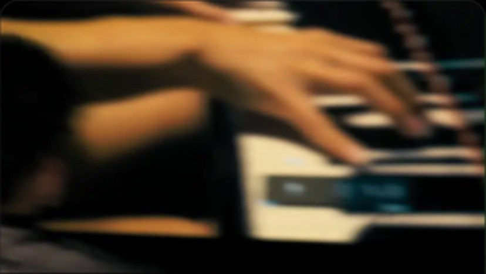
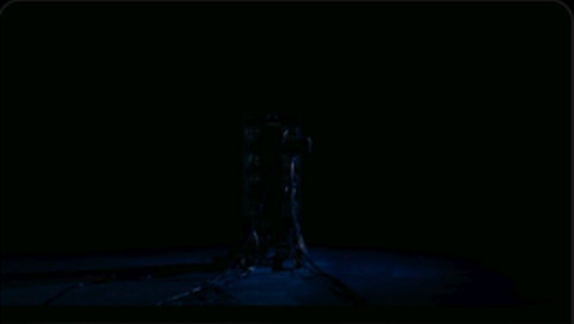
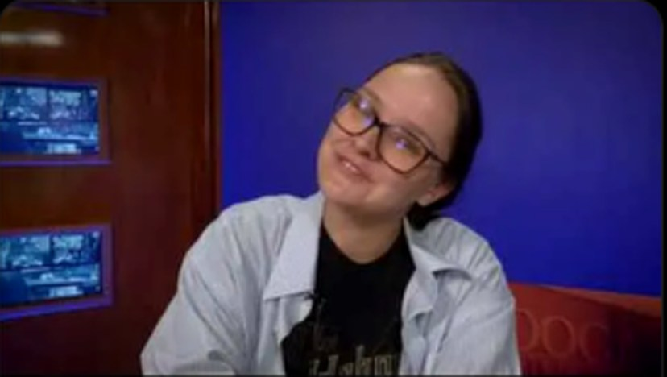
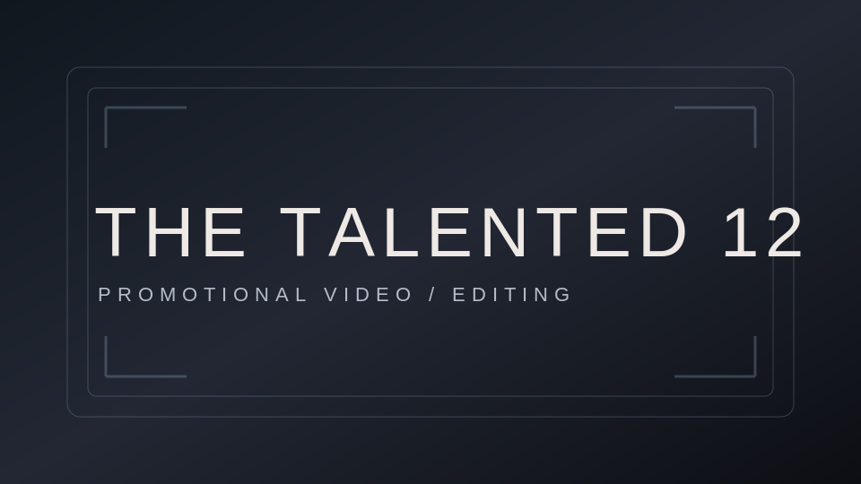
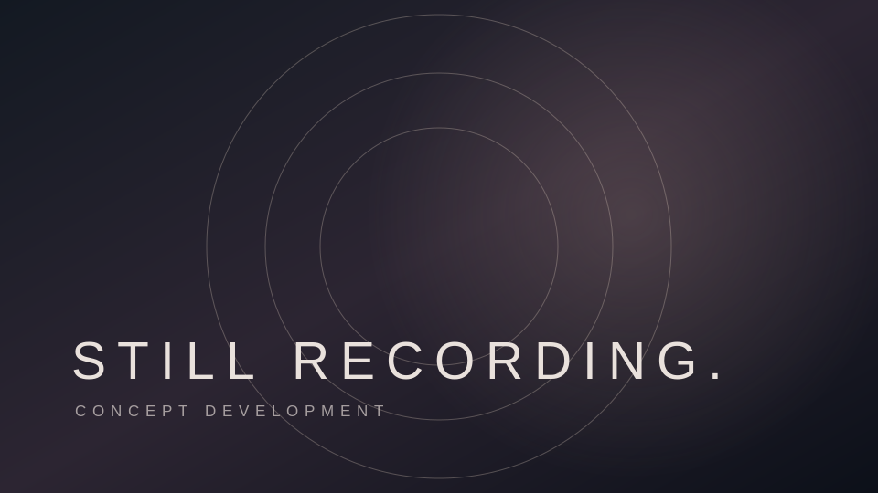

2026 / WRITER & PRODUCER
Blue After Gold
A student short film about memory, first love, and the people we meet before goodbye. Directed by Alessandro Yoxom. In post-production.
PROJECT WEBSITE ↗FLOVEREX STUDIOS / SELECTED WORK
Frames, stories, movement. Selected short films, promos, conceptual treatments, and individual production work.
01 / NARRATIVE

2026 / WRITER & PRODUCER
A student short film about memory, first love, and the people we meet before goodbye. Directed by Alessandro Yoxom. In post-production.
PROJECT WEBSITE ↗
2026 / DIRECTOR OF PHOTOGRAPHY
A short narrative film following an unexpected cable beyond the walls of a home. Cinematography and camera operation by Kieth Tyler Flores.
SEE MAIN PORTFOLIO ↗02 / PROMOTIONAL & EDITORIAL VIDEO

2025 / PRIMARY CAMERA
A continuous-shot promotional piece produced for Chattanooga State's Media Technologies program.
WATCH ON YOUTUBE ↗
2026 / EDITOR
Selected student-produced promotional videos for local artists and makers. Editing credits include Triibe of Kage, Endelouz, Krantsy, and Encouraging Prints.
VIEW A PROJECT ↗FEATURED VIDEO / WATCH THE WORK
Embedded video showing the promotional work and live camera movement.
03 / IN DEVELOPMENT

An original visual treatment exploring friendship, remembered places, and home-video textures. A conceptual personal project—not an official commission or released music video.
04 / CREW WORK
Individual camera and production assignments, not events produced by FlovereX Studios.
Game-day production experience.
Live campus and sports production.
One-time camera operator assignment.